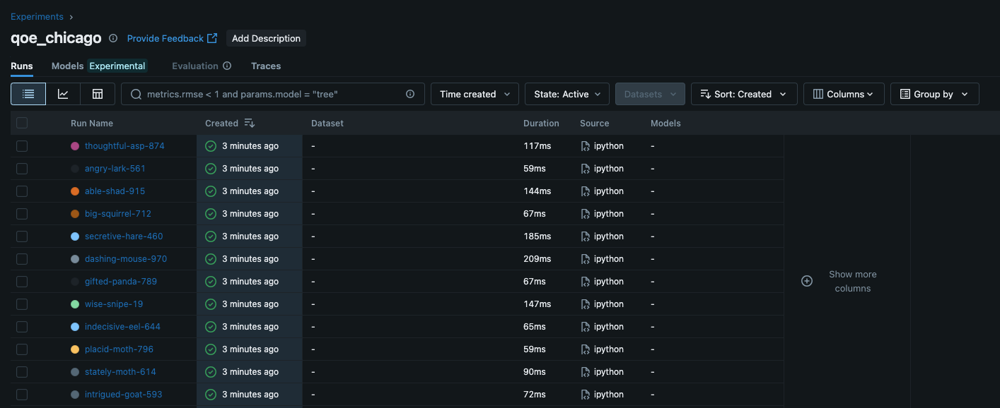
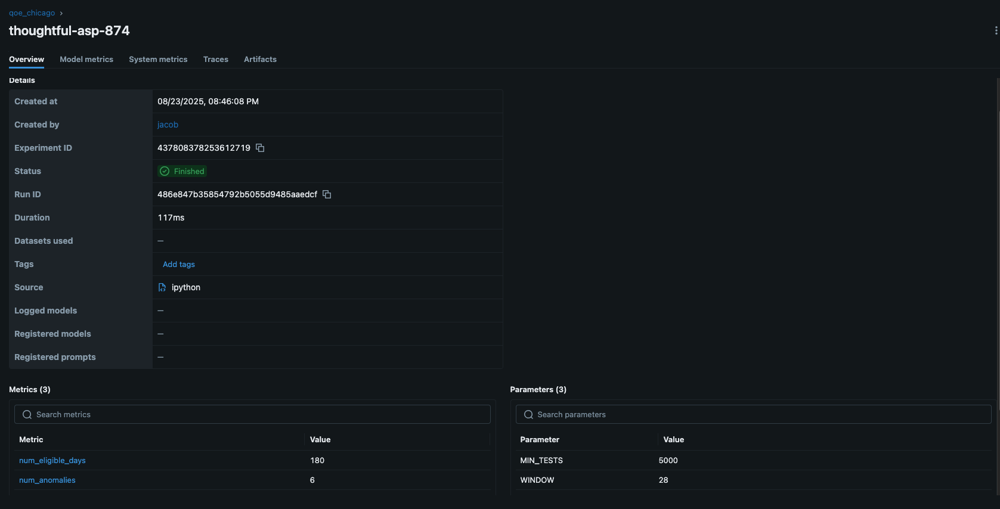

Learning MLFlow
Introduction
Detect and visualize days with degraded network QoE for Chicago using a simple, explainable rule on tail latency (p95) and loss, and track experiments with MLflow.
Data
Data Source: The data is obtained from https://console.cloud.google.com/bigquery?project=measurement-lab
Data Description:
- date — the day the tests happened.
- rtt_p50_ms — median (“typical”) round-trip time in milliseconds that day. Lower is better.
- rtt_p95_ms — 95th-percentile (the “tail”) latency. This captures the bad spikes a gamer actually feels.
- avg_loss — average packet loss rate (0–1). Even small increases hurt interactive apps.
- tests — how many NDT download tests were included for that day (sample size).
So, we have a daily QoE proxy: typical latency, tail latency, loss, and volume.
The following BigQuery is used to extract 6 months of data from Chicago, USA
SELECT
date,
APPROX_QUANTILES(a.MinRTT, 100)[SAFE_ORDINAL(50)] AS rtt_p50_ms,
APPROX_QUANTILES(a.MinRTT, 100)[SAFE_ORDINAL(95)] AS rtt_p95_ms,
AVG(a.LossRate) AS avg_loss,
COUNT(*) AS tests
FROM `measurement-lab.ndt.unified_downloads`
WHERE date BETWEEN DATE_SUB(CURRENT_DATE(), INTERVAL 180 DAY) AND CURRENT_DATE()
AND client.Geo.city = "Chicago"
AND client.Geo.countryCode = "US"
GROUP BY date
ORDER BY date;Methodology
I plotted the daily 95th percentile latency. This data is available for 6 months. The plot is shown below.
.png)
I then did the following steps to identify anomalies based on a simple logic (greater than a factor of the median absolute deviation). While doing this, I also added a parameter to ignore days with small samples (used MIN_TESTS = 5000).
- Compute a rolling baseline of rtt_p95_ms (e.g., 7-day rolling median).
- Compute a robust deviation using MAD (median absolute deviation).
- Flag an anomaly when today_p95 > baseline + k * 1.4826 * MAD (start with k=3). (For normal data, MAD ≈ 0.67449·σ, so σ ≈ 1.4826·MAD (1/0.67449))
Here we get
- baseline tracks the “normal” tail latency.
- threshold is a moving “too high” line (baseline + robust spread).
- red dots (anomalies) = days when players likely felt worse QoE.

We see 20 anomalies were detected. I did a grid search using WINDOW in [7, 14, 28] and K in [3, 3.5, 4, 5]. I logged each image created and the .csv file of anomalies using mlflow. This is the code snipped used
import mlflow
mlflow.set_tracking_uri(f'file://{home_path}mlruns')
mlflow.set_experiment("qoe_chicago") # auto-creates if not present
for WINDOW in [7, 14, 28]:
for K in [3, 3.5, 4, 5]:
df = df_copy.copy()
s = df.loc[df["eligible"], "rtt_p95_ms"]
# Rolling median baseline
baseline = s.rolling(WINDOW, min_periods=WINDOW).median()
mad_series = s.rolling(WINDOW, min_periods=WINDOW).apply(mad, raw=True)
# Threshold = baseline + K * 1.4826 * MAD
threshold = baseline + K * 1.4826 * mad_series
# Bring series back onto full index
df["baseline"] = baseline.reindex(df.index)
df["threshold"] = threshold.reindex(df.index)
# Anomaly rule
df["anomaly"] = (df["rtt_p95_ms"] > df["threshold"]) & df["eligible"]
num_eligible = int(df["eligible"].sum())
num_anoms = int(df["anomaly"].sum())
anomaly_rate = num_anoms / max(1, num_eligible)
fig, ax = plt.subplots()
ax.plot(df["date"], df["rtt_p95_ms"], label="p95 RTT (ms)")
ax.plot(df["date"], df["baseline"], label=f"{WINDOW}d rolling median")
ax.plot(df["date"], df["threshold"], "--", label="threshold")
a = df["anomaly"]
ax.scatter(df.loc[a, "date"], df.loc[a, "rtt_p95_ms"], label="anomaly")
ax.set_title(f"Chicago – Daily p95 Latency with Anomaly Flags\n with K = {K} and WINDOW = {WINDOW}")
ax.set_xlabel("Date")
ax.set_ylabel("Latency (ms)")
ax.legend()
fig_path = os.path.join(fig_save_path, f"anomalies_w{WINDOW}_k{K}.png")
fig.savefig(fig_path, dpi=150)
plt.savefig(fig_path, dpi=150) # save the figure you just plotted
plt.close()
anom_csv = f"anomaly_days_w{WINDOW}_k{K}.csv"
df.loc[df["anomaly"], ["date","rtt_p95_ms","avg_loss","tests"]].to_csv(os.path.join(home_path, "data", anom_csv), index=False)
with mlflow.start_run():
mlflow.log_param("WINDOW", WINDOW)
mlflow.log_param("K", K)
mlflow.log_param("MIN_TESTS", MIN_TESTS)
mlflow.log_metric("num_eligible_days", num_eligible)
mlflow.log_metric("num_anomalies", num_anoms)
mlflow.log_metric("anomaly_rate", anomaly_rate)
mlflow.log_artifact(os.path.join(home_path, "data", anom_csv))
mlflow.log_artifact(fig_path)
print(f"MLflow logged: K={K}, WINDOW={WINDOW}, anomalies={num_anoms} ({anomaly_rate:.1%})")For the data used, I obtained.
MLflow logged: K=3.5, WINDOW=7, anomalies=19 (10.6%)
MLflow logged: K=4, WINDOW=7, anomalies=19 (10.6%)
MLflow logged: K=5, WINDOW=7, anomalies=17 (9.4%)
MLflow logged: K=3, WINDOW=14, anomalies=15 (8.3%)
MLflow logged: K=3.5, WINDOW=14, anomalies=10 (5.6%)
MLflow logged: K=4, WINDOW=14, anomalies=8 (4.4%)
MLflow logged: K=5, WINDOW=14, anomalies=7 (3.9%)
MLflow logged: K=3, WINDOW=28, anomalies=13 (7.2%)
MLflow logged: K=3.5, WINDOW=28, anomalies=11 (6.1%)
MLflow logged: K=4, WINDOW=28, anomalies=9 (5.0%)
MLflow logged: K=5, WINDOW=28, anomalies=6 (3.3%)Why use MLFlow
- Structured experiment tracking: You logged WINDOW, K, MIN_TESTS and could compare runs side-by-side. With a text logger, you’d be grepping files.
- Metrics + artifacts together: Each run stores metrics (anomaly_count/rate) and artifacts (CSV + PNG). A logger won’t manage files for you or present them in a UI.
- Reproducibility & lineage: The “run” captures exactly which params produced a chart/table.=
- UI for decision-making: You literally chose 14/5 by comparing runs in the UI.
MLFlow UI
Here we can access the MLFlow UI using the following command.
mlflow ui --backend-store-uri ./mlrunsThe following image shows a screenshot of the MLFlow UI. Each row represents another iteration of the experiment.

Below screenshot shows what I see when I click on one of the iterations
.
I can see the model metrics (which I included using mlflow.log_metric(), as well as artifacts (the files created for each experiment).
Models
Models are central place to register, version, and manage models you log from runs (mlflow.
TO BE CONTINUED.